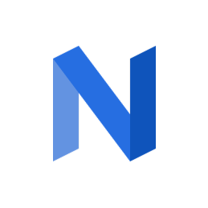

입고·투입
입고 요청을 실행 작업으로 구성하고 투입 설비에 지시를 전달합니다.
입고 물품 → 다음 공정 투입
EXECUTION · CONTROL · VISIBILITY
NOVA는 상위 시스템과 자동화 설비를 연결하는
WES/WCS 실행·제어 플랫폼입니다.
WHO WE ARE
아이덴플루는 시스템과 설비, 현장 운영을 함께 바라보며 물류 자동화의 구축과 안정화를 지원합니다.
현장의 업무 흐름을 반영해 작업 실행과 운영 데이터 관리 기능을 구성합니다.
상위 시스템의 작업 요청을 설비 실행으로 연결하고 상태와 결과를 수집합니다.
시운전과 초기 안정화부터 점검, 장애 대응 및 운영 개선을 지원합니다.
THE CONNECTION
NOVA는 상위 시스템과 자동화 설비 사이에서 작업을 조율하고 설비별 실행을 연결합니다.
주문과 업무 계획, 작업 요청 전달
요청을 실행 가능한 작업으로 구성하고, 설비에 맞게 연결
작업 지시 수행 및 진행 상태 전달
대표적인 연동 구조입니다. 실제 연결 방식과 제어 범위는 현장 조건에 따라 달라집니다.
ONE CONNECTED OPERATION
NOVA의 실행 데이터를 운영 화면과 현장 시각화로 연결합니다.
현황 · 이력 · 사용자 · 설정
2.5D·3D 현장 배치 · 상태 · 알람
NOVA Workspace는 NOVA의 운영 화면입니다. NOVA Studio는 NOVA 또는 기존 운영 시스템과 연계합니다.
WORK IN MOTION
입고부터 보관·이송·분류·출고까지, 각 공정의 작업 요청과 실행 결과를 연결합니다.
입고 요청을 실행 작업으로 구성하고 투입 설비에 지시를 전달합니다.
자동창고의 입고·출고 작업을 연결하고 진행·완료 상태를 수집합니다.
컨베이어 또는 AGV·AMR과 연동해 공정 간 이동을 전달하고 상태를 확인합니다.
출고 우선순위와 현장 상태를 반영해 작업을 조율하고 분류 설비와 연결합니다.
이해를 돕기 위한 업무 흐름 예시입니다. 작업 규칙과 설비별 연동 범위는 현장 조건에 따라 결정됩니다.
WHAT NOVA DOES
WES와 WCS를 중심으로 현장의 작업 흐름과 설비 상태를 이어갑니다.
요청을 실행 단위로 구성하고 현장 상태와 예외 상황에 따라 작업 순서를 조정합니다.
작업 지시를 설비별 명령으로 전달하고 통신 및 연결 상태를 관리합니다.
작업 진행, 완료 결과와 설비 알람을 수집해 다음 운영에 반영합니다.
브라우저에서 작업·설비 현황을 확인하고 이력, 사용자 및 운영 설정을 관리합니다.
NOVA · EXECUTION & CONTROL

NOVA WES / WCSNOVA WES와 WCS가 작업 요청을 설비 실행으로 연결합니다.
| 솔루션 | 구성 | 기능 | 상세 내용 |
|---|---|---|---|
| NOVA | WES작업 실행·조율 | 작업 구성 | 상위 시스템의 요청을 실행 가능한 작업 단위로 구성합니다. |
| 우선순위 관리 | 작업의 처리 순서와 진행 상태를 관리합니다. | ||
| 상황별 흐름 조정 | 현장 상태와 예외 상황에 따라 대기 작업의 순서를 조정하고 완료 결과를 다음 공정에 반영합니다. | ||
| WCS설비 연동·제어 | 설비 인터페이스 | 자동창고, 컨베이어, 소터, AGV·AMR 등 설비별 통신 방식에 맞춰 연결합니다. | |
| 명령 전달 | WES의 작업 지시를 설비가 실행할 명령으로 변환해 전달합니다. | ||
| 진행·완료 결과 | 설비의 작업 진행 및 완료 결과를 수집해 운영 흐름에 반영합니다. | ||
| 설비 상태·알람 | 설비 상태와 알람을 공통된 형태로 수집해 운영 화면에 연결합니다. | ||
| 통신 관리 | 설비 통신 단절과 응답 지연을 감지하고 연결 상태를 관리합니다. | ||
| WES / WCS업무별 적용 예시 | 입고·투입 | 상위 시스템의 요청을 실행 작업으로 구성하고 투입 설비에 지시를 전달합니다. | |
| 보관·반출 | 자동창고의 입고·출고 작업을 설비 명령으로 연결하고 진행·완료 상태를 수집합니다. | ||
| 공정 간 이송 | 컨베이어나 AGV·AMR과 연계해 이동 작업을 전달하고 설비 상태를 확인합니다. | ||
| 분류 | 분류 공정의 작업 지시를 설비 실행으로 연결하고 처리 결과를 수집합니다. | ||
| 출고 순서 조율 | 출고 우선순위와 현장 상태를 반영해 대기 작업의 순서를 조정합니다. |
업무별 기능과 설비 유형은 적용 예시이며, 통신 방식·제어 범위와 작업 규칙은 현장 조건에 맞춰 검토합니다. NOVA 상세 ↗
STANDARDIZED EQUIPMENT DOMAIN
설비를 보관·이송·분류·피킹 및 분배 업무로 구분하고, 유형별 표준 Agent를 정리합니다.
| 업무 구분 | 설비 유형 예시 | 표준 도메인 |
|---|---|---|
| 보관 | 유닛·미니로더 | Agent / 유닛·미니로더 |
| 셔틀 | Agent / 셔틀 | |
| 수직 회전식 보관 설비 | Agent / 수직 캐러셀 | |
| 플로우랙 | Agent / 플로우랙 | |
| 이송 | 컨베이어 | Agent / 컨베이어 |
| AGV·AMR | Agent / AGV·AMR | |
| 수직 이송기·리프터 | Agent / 수직 이송기·리프터 | |
| 분류 | 크로스벨트 소터 | Agent / 크로스벨트 소터 |
| 틸트 트레이 소터 | Agent / 틸트 트레이 소터 | |
| 피킹·분배 | DPS 디지털 피킹 시스템 | Agent / DPS |
| DAS 디지털 분배 시스템 | Agent / DAS |
설비 분류는 예시이며 실제 역할과 연동 범위는 현장 구성에 따라 달라질 수 있습니다. 플로우랙의 연동 여부는 현장 구성에 따라 달라집니다. 설비 참고: 수직 캐러셀 ↗
OPERATIONS MANAGEMENT
작업과 설비 현황부터 운영 설정까지, 브라우저에서 확인하고 관리합니다.
작업 진행, 처리 수량과 주요 운영 지표를 확인합니다. 설비별 보관율과 구역별 여유 공간도 살펴봅니다.
입출고 작업과 설비 현황을 조회하고 알람 발생 시각과 복구 상태를 확인합니다.
사용자와 역할을 관리하고 업무에 맞는 접근 권한과 메뉴를 설정합니다.
일일 집계와 서버 리소스를 확인하고 운영 설정값, 스케줄러 및 정기 작업 일정을 관리합니다.
NOVA Workspace는 별도 클라이언트 설치 없이 사용하는 NOVA의 운영 화면입니다. NOVA 상세 ↗
VISIBILITY & MONITORING
운영 데이터를 설비 배치와 연결해, 전체 흐름과 문제가 발생한 위치를 함께 살펴봅니다.
현장 레이아웃과 설비 연결 관계, 물류 이동 경로를 한눈에 살펴봅니다.
설비 높이와 층간 구조, 주변 설비와의 위치 관계를 직관적으로 확인합니다.
설비 상태와 알람을 현장 위치에 연결해 주변 상황과 함께 확인합니다.
NOVA 또는 기존 운영 시스템과 연계를 검토할 수 있으며, 연계 범위는 제공 데이터와 인터페이스에 따라 달라집니다. NOVA Studio 상세 ↗
FROM PLAN TO OPERATIONS
기존 현장 개선, 일부 공정 확장, 신규 구축까지 적용 범위와 현장 조건에 맞춰 진행합니다.
업무 요구사항과 연동 대상 정리
업무 기능 및 시스템·설비 연동
정상·예외 시나리오 검증
초기 운영 점검과 보완
점검과 개선 범위 협의
연결할 시스템과 설비, 현재 운영의 고민을 함께 살펴봅니다.
㈜아이덴플루 · 서울 구로구 디지털로 300, 12층 1248호 · idenflu.com ↗